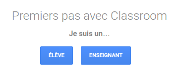
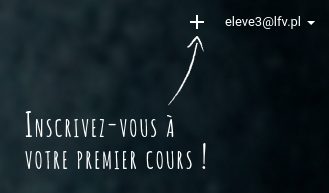

Google Classroom, une documentation
L’objet de ce site est de fournir une approche rapide de Google Classroom.
Qu’est-ce que Google Classroom ?
Google Classroom est un service de Google qui permet de créer et gérer des classes virtuelles. On peut considérer une classroom comme un espace d’échange et de partage avec des fonctionnalités avancées.
Première fois
Lorsqu’on se connecte pour la première fois au site Google Classroom, l’interface nous demande de nous enregistrer au service comme Enseignant ou comme Élève.

Il suffit de cliquer sur le statut qui nous correspond.
Différents statuts
Enseignant : c’est celui qui a créé la classe virtuelle. Il peut poster des messages, créer des devoirs, inviter des élèves. Il a l’autorisation de tout faire dans la classe, entre autre les droits de créer, modifier, supprimer, censurer,…
Élèves : ce sont les utilisateurs qui se sont inscrits à la classe. Il ne peuvent que lire les messages postés sur la classe, participer aux devoirs et éventuellement chatter avec les autres utilisateurs de la classe.
On peut alors déjà commencer à s’inscrire à une classe en cliquant sur le signe + à côté de notre adresse électronique (en haut à droite).

Activation du statut Enseignant
- Il faut que l’administrateur du service Google Classroom (en l’occurence Marcin au LFV) valide le statut d’enseignant pour celui qui en a fait la requête. Bien vérifier que cela a été fait sinon vous ne pourrez pas créer de classe.
- Si un élève clique
en faisant exprèspar erreur sur le bouton Enseignant, il faudra que Marcin intervienne pour invalider son statut.
Jargon
Voici les termes utilisés par Google danas ce service et leur signification~:
Cours : c’est ainsi que Google appelle la classe virtuelle.
Flux : c’est l’endroit où tout ce qui va être publié dans le cours apparait.
Annonce : c’est un message publié dans le flux du cours.
Fonctionnalités
- Informer les participants à la classe (communiquer un lien, un fichier, une vidéo).
- Poser une question aux élèves de la classe (un genre de mini-sondage).
- Donner un devoir aux élèves de la classe.
- Notifications automatiques à chaque utilisateur lorsque quelque chose est publié dans la classe (via les adresses Gmail des utilisateurs).
- Création automatique d’un agenda avec la classe consultable par tous les utilisateurs de la classe. À chaque devoir créé, un événement est ajouté à l’agenda.
Pour aller plus loin
Pour des informations plus détaillées, vous pouver consulter la documentation officielle